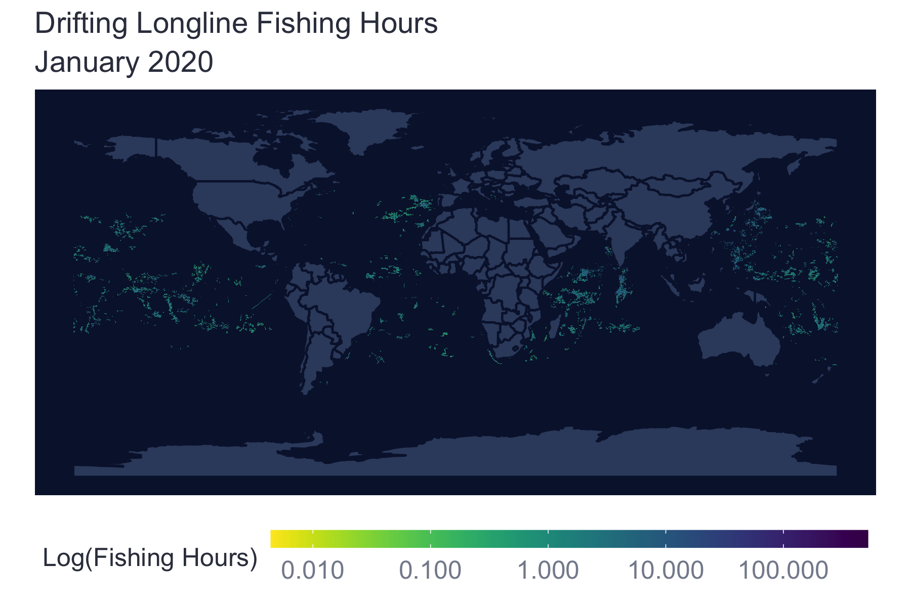

4.3 Example: Calculate Fishing Hours
In this example we’ll query fishing hours for January 2020 for all active drifting longline fishing vessels. We’ll write the query as a string in R, download the results, and create a map of fishing hours. The example is broken down into three sections: 1) Setup, 2) Query data and 3) Map Fishing Effort.
4.3.1 Setup
Load packages and setup the BigQuery connection. In this example, we’re using bigrquery, a package designed to interface with BigQuery in R. To authorize, we simply call the bq_auth() command it should open a window that allows you to authenticate yourself. If you have already authorized your Google account in R, the authorization should pull up a message allowing you to select a pre-authorized account. Your credentials should typically be your UCSB email address and password.
4.3.2 Query Data
Write the query to get fishing hours for all drifting longliners in January 2020 binned at 0.1 degrees. While the query below can be written into a larger nested query, it’s recommended to use subqueries, particularly when starting out in SQL since they are easier to check and debug. Since we are using tables from both the world-fishing-827 project and the emlab-gcp project, it’s really important to identify the project when calling the datasets in our query (i.e. starting with world-fishing-827. or emlab-gcp.). The query to calculate fishing hours is composed of several subqueries:
Identify segments to use in the analysis that pass the recommended noise filters (a good segment with more than 10 positions per segment that is not overlapping and short). We’ll be using the testing table,
emlab-gcp.emlab_test.pipe_v20201001_subset2020Create a list of vessels of interest. In this case we will use vessels with a best vessel class of
drifting_longlinesin 2020 that are on GFW’s best fishing vessel table (world-fishing-827.fishing_vessels_ssvid_v20210706).Gather AIS positions for January 2020 only including good segments. We’ll be using the testing table,
emlab-gcp.emlab_test.pipe_v20201001_fishing_subset2020.Filter AIS positions for our vessels of interest
Calculate fishing hours. Fishing hours are calculated using
hoursand thennet_score. When thennet_score = 1the neural net thinks this is a fishing position so we assign thehoursas fishing hours.Aggregate fishing hours. We’ll bin fishing hours at 0.1 degree resolution and aggregate across grids. This gives us a total estimate of fishing hours for each cell by all drifting longline vessels in January 2020. Note: by including the
ssvidand/ordatein theGROUP BYstatement you can aggregate fishing hours per grid cell by vessel and date.
sql_fishing_hours <- "#StandardSQL
WITH
##################################
# Identify good segments using
# GFW's recommended noise filters
good_segments AS (
SELECT
seg_id
FROM
`emlab-gcp.emlab_test.pipe_v20201001_segs_subset2020`
WHERE
good_seg
AND positions > 10
AND NOT overlapping_and_short
),
##################################
# List of drifting longline fishing
# vessels in 2020
longline_vessels_2020 AS (
SELECT
ssvid,
year
FROM
`world-fishing-827.gfw_research.fishing_vessels_ssvid_v20210706`
WHERE
best_vessel_class = 'drifting_longlines'
AND year = 2020
),
##################################
# Fishing positions for January
# 2020 from the emlab test table
fishing_positions AS (
SELECT
ssvid,
lat,
lon,
EXTRACT(date FROM timestamp) AS date,
EXTRACT(year FROM timestamp) AS year,
hours,
nnet_score
FROM
`emlab-gcp.emlab_test.pipe_v20201001_fishing_jan2020`
WHERE
# Keep only good segments
seg_id IN(
SELECT
seg_id
FROM
good_segments
)
),
##################################
# Filter fishing positions for
# only our vessels of interest
fishing_filtered AS (
SELECT
*
FROM
fishing_positions
JOIN longline_vessels_2020
# Only keep positions for fishing vessels active that year
USING(ssvid, year)
),
##################################
# Calculating fishing hours for
# each position
calc_fishing_hours AS (
SELECT
*,
IF(nnet_score = 1, hours, 0) As fishing_hours
FROM
fishing_filtered
),
##################################
# Aggregate fishing hours by
# grid cell
fishing_binned AS (
SELECT
# Convert lat/lon to 0.1 degree bins
FLOOR(lat * 10) / 10 AS lat_bin,
FLOOR(lon * 10) / 10 AS lon_bin,
SUM(hours) as hours,
SUM(fishing_hours) as fishing_hours
FROM
calc_fishing_hours
GROUP BY lat_bin, lon_bin
)
SELECT * FROM fishing_binned"Run the query and write the results as a table (test_fishing_hours_jan2020_tenthdegree) in BigQuery. This way the query doesn’t have to be re-run every time the SOP gets updated. Instead, we just download the table we created into the working environment. Using the BigQuery console to validate the query it will bill ~12 GB (< $1).
bq_project_query("emlab-gcp", #Billing project
sql_fishing_hours, #Query string object
destination_table = bq_table(project = "emlab-gcp",
dataset = "emlab_test",
table = "test_fishing_hours_jan2020_tenthdegree"),
use_legacy_sql = FALSE, #False specifies we are using Standard SQL
allowLargeResults = TRUE) #True to allow for large outputs4.3.3 Map Fishing Effort
We’ll use the data from the table we just created to make a global map of fishing effort in January 2020 for all drifting longline vessels. Fishing hours range from just above 0 to just over 500 although most fishing hours values are below 100. Fishing hours can be displayed in a number of ways including total fishing hours, total fishing hours per area (\(km^2\)) or log transformed fishing hours. In this example, we’ll log transform the fishing hours. The colors used to produce the base map were taken from GFW color palletes which are part of the fishwatchr package. More inforamtion on installing and using the fishwatchr package can be found in the package repository.
# Download a global map
land_sf <- rnaturalearth::ne_countries(scale = 50, returnclass = "sf")
# Download the fishing hours data
fishing_hours <- bq_table_download("emlab-gcp.emlab_test.test_fishing_hours_jan2020_tenthdegree",
n_max = Inf)
# Graph only non-zero fishing hours
nonzero_hours <- fishing_hours %>%
dplyr::filter(fishing_hours > 0)
# Map fishing hours
fishing_map <- ggplot() +
geom_sf(data = land_sf,
color = "#0A1738",
fill = "#374a6d") +
geom_tile(data = nonzero_hours,
aes(x = lon_bin, y = lat_bin, fill = fishing_hours)) +
viridis::scale_fill_viridis(name = "Log(Fishing Hours)", begin = 1, end = 0,
trans = "log",
breaks = scales::log_breaks(n = 6, base = 10),
labels = scales::label_number()) +
labs(title = "Drifting Longline Fishing Hours",
subtitle = "January 2020",
y = "",
x = "") +
theme_minimal() +
# Styling
theme(panel.border = element_blank(),
panel.background = element_rect(fill = "#0a1738", color = NA),
panel.grid.major = element_line(color = "#0a1738"),
panel.grid.minor = element_line(color = "#0a1738"),
legend.position = "bottom",
legend.box = "vertical",
legend.key.height = unit(3, "mm"),
legend.key.width = unit(20, "mm"),
legend.title.align = 0.5,
legend.text = element_text(color = "#848b9b", size = 10),
legend.title = element_text(color = "#363c4c", size = 10),
plot.title = element_text(color = "#363c4c", size = 12),
plot.subtitle = element_text(color = "#363c4c", size = 12),
axis.title = element_blank(),
axis.text = element_text(size = 6)) 